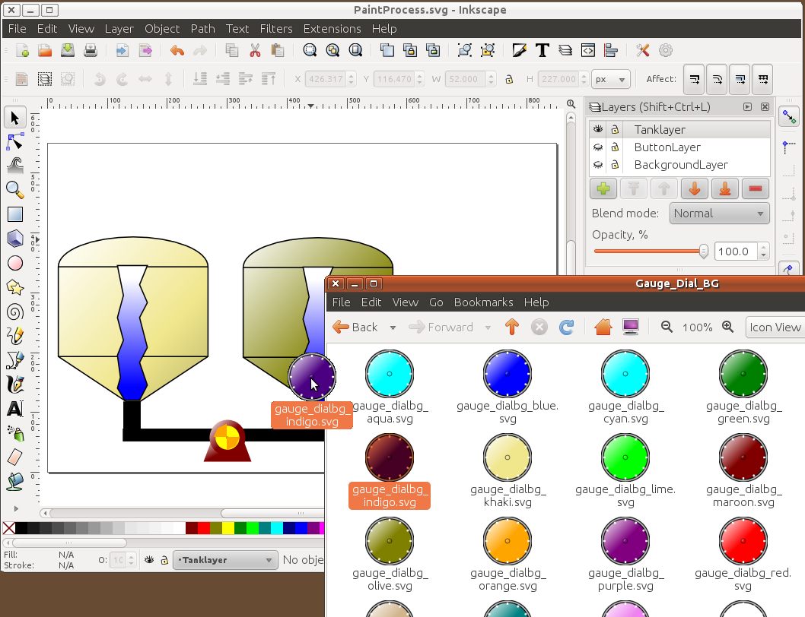
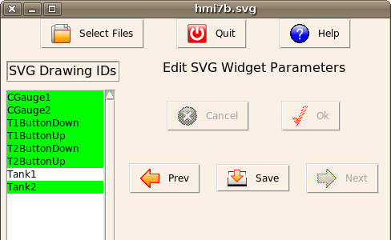
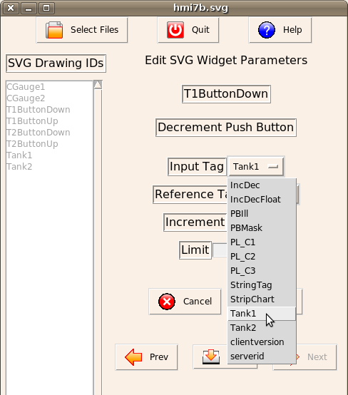

MBLogic
for an open world in automation
MBLogic
for an open world in automation
MBLogic HMIBuilder:
Overview
MBLogic HMIBuilder is a program which allows you to construct web based HMI systems using simple editing techniques. A set of templates is provided which you can customise or use as is. Graphical HMI screens are constructed using the Inkscape drawing editor (a popular free drawing editor). MBLogic HMIBuilder will combine the Inkscape drawings with the templates to produce a finished HMI web page.
The following is a brief summary of what can be done with MBLogic HMIBuilder. Complete documentation is included with HMIBuilder.
MBLogic HMIBuilder Widget Library
MBLogic HMIBuilder comes with a selection of HMI widgets (controls) which can be dragged into a drawing and positioned visually. A large library of HMI widgets is provided with HMIBuilder, and custom widgets can be constructed if desired.


Inkscape Drawing Editor
Inkscape is a free open source drawing editor which is widely used to make professional grade drawings. The native drawing format for Inkscape is SVG (Scalable Vector Graphics) which is also the standard native vector drawing format for web pages. MBLogic HMIBuilder HMI widgets can be dragged onto an Inkscape drawing and positioned visually. In addition, custom art work can be created using Inkscape's drawing capabilities.

MBLogic HMIBuilder
MBLogic HMIBuilder will take drawings assembled using Inkscape and automatically generate the scripting and data and insert it into a web page template to produce a finished HMI web page without programming. Options are selected using drop down menus and check boxes.


 
Help for HMIBuilder
MBLogic HMIBuilder comes with a complete set of help files which will appear in your web browser when you click on the "help" button. The same help files are also available at the MBLogic project web site.